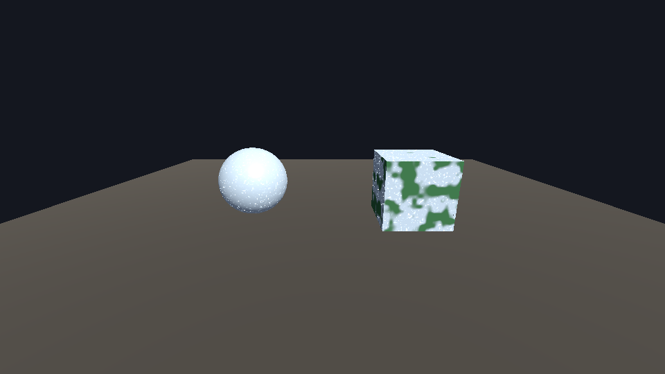
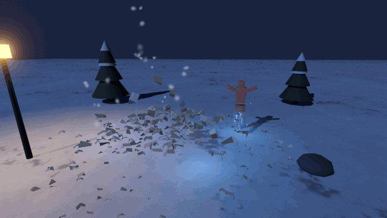
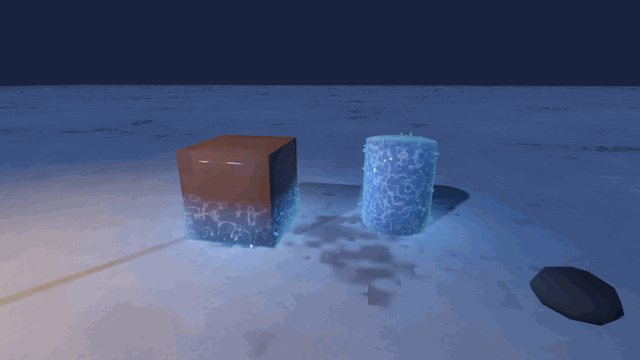

How to make a freeze and frost effect in Godot 4
Short version: frost on an object is a second material pass drawn over the object's own material. Godot has a slot for exactly that, next_pass, so the object keeps its texture and its lighting and the frost sits on top. Inside the pass, noise sampled in world space decides where the frost is, the normal's Y decides that the top faces frost first, and one amount uniform grows the cover from nothing to everything. Below is that as one script of about 75 lines, shader included, no textures and no UVs needed, then an ice shell, thawing and frozen ground, and where this stops being enough.
The 75-line frost
Attach this to any MeshInstance3D and call freeze(1.0). It wraps whatever material the mesh already has.

amount 1.0, the box at 0.5.extends MeshInstance3D
## Frost that grows over this mesh. Runs as a next_pass, so the mesh keeps its own material.
const FROST_SHADER := """
shader_type spatial;
render_mode blend_mix, cull_back;
uniform float amount : hint_range(0.0, 1.0) = 0.0;
uniform vec3 frost_color : source_color = vec3(0.86, 0.94, 1.0);
uniform float scale = 5.0;
varying vec3 wpos;
varying vec3 wnrm;
float hash(vec3 p) {
p = fract(p * 0.3183099 + vec3(0.1, 0.2, 0.3));
p *= 17.0;
return fract(p.x * p.y * p.z * (p.x + p.y + p.z));
}
float noise(vec3 p) {
vec3 i = floor(p);
vec3 f = fract(p);
f = f * f * (3.0 - 2.0 * f);
float a = mix(hash(i), hash(i + vec3(1.0, 0.0, 0.0)), f.x);
float b = mix(hash(i + vec3(0.0, 1.0, 0.0)), hash(i + vec3(1.0, 1.0, 0.0)), f.x);
float c = mix(hash(i + vec3(0.0, 0.0, 1.0)), hash(i + vec3(1.0, 0.0, 1.0)), f.x);
float d = mix(hash(i + vec3(0.0, 1.0, 1.0)), hash(i + vec3(1.0, 1.0, 1.0)), f.x);
return mix(mix(a, b, f.y), mix(c, d, f.y), f.z);
}
void vertex() {
wpos = (MODEL_MATRIX * vec4(VERTEX, 1.0)).xyz;
wnrm = normalize((MODEL_MATRIX * vec4(NORMAL, 0.0)).xyz);
}
void fragment() {
float n = noise(wpos * scale) * 0.65 + noise(wpos * scale * 2.7) * 0.35;
float up = wnrm.y * 0.5 + 0.5;
// Frost settles on the top faces first and creeps down as amount rises.
float cover = amount * 1.4 - n * 0.7 - (1.0 - up) * 0.4;
float m = smoothstep(0.0, 0.12, cover);
float sparkle = pow(noise(wpos * 60.0), 12.0) * 4.0;
ALBEDO = frost_color;
ALPHA = m;
ROUGHNESS = 0.35;
SPECULAR = 0.7;
EMISSION = frost_color * sparkle * m * 0.6;
}
"""
var _mat: ShaderMaterial
var _tween: Tween
var _amount := 0.0
func _ready() -> void:
var sh := Shader.new()
sh.code = FROST_SHADER
_mat = ShaderMaterial.new()
_mat.shader = sh
var base := get_active_material(0)
if base == null:
base = StandardMaterial3D.new()
material_override = base
base.next_pass = _mat
_mat.set_shader_parameter("amount", _amount)
## freeze(1.0) covers the mesh, freeze(0.0) thaws it.
func freeze(to: float, seconds: float = 1.5) -> void:
if _tween:
_tween.kill()
_tween = create_tween()
_tween.tween_method(_set_amount, _amount, to, seconds)
func _set_amount(v: float) -> void:
_amount = v
_mat.set_shader_parameter("amount", v)
Why it works
| Part | What it does |
|---|---|
next_pass | The mesh is drawn twice: once with its own material, then again with the frost. The second draw uses the same vertices, so it follows a skinned, animated character for free and never floats off the surface. Your material is never edited. |
| Noise in world space | The pattern is sampled from the fragment's world position, so it needs no UVs and looks the same on a sphere, a crate and a character. Two octaves, one coarse and one finer, give patches with ragged edges. |
| Top faces first | up is 1 on faces pointing up and 0 on faces pointing down. Subtracting (1 - up) * 0.4 from the cover means frost reaches the top of an object first and the underside last, which is how frost actually settles. |
smoothstep edge | The cover value is a signed distance to the frost line. A 0.12-wide smoothstep across it gives an edge that's soft but still an edge. Without it the frost fades in everywhere at once like a tint. |
| Sparkle | A third, very high-frequency noise raised to the 12th power is zero almost everywhere and bright in a few specks. Fed to EMISSION, those specks read as ice crystals catching the light. |
| One uniform, one tween | Everything is driven by amount. Freezing, thawing and partial freeze are the same shader at different values, so the game code is one call. |
Variations
Freezing from a hit point is one uniform more: pass the hit position as hit_point and use cover = amount * 3.0 - distance(wpos, hit_point) - n * 0.7, so the frost spreads out from where the ice bolt landed. For objects that move, sample the noise from VERTEX instead of world position, or the pattern slides across them as they walk. An ice shell is a second next_pass after this one that pushes each vertex out 2 cm along its normal, with low roughness, a pale blue tint and a fresnel rim so the silhouette glows. Thawing is freeze(0.0) with the base material's roughness dropped for a few seconds, which reads as wet. Frozen ground is a flat quad with the same shader and scale raised.
Where it runs out
Shattering. The payoff of a freeze is the frozen thing breaking into shards of itself, and no shader does that. It takes building shard meshes from the object's own geometry, launching them with gravity and spin, and hiding the original at the same frame.
The in-between states. A convincing freeze is frost, then the shell forming over the frost, then drips and a wet sheen when it thaws, and each is timed against the others. Getting the overlaps right is most of the work.
Refraction. A real ice shell bends what's behind it, which needs the screen texture. Compatibility, and so Web exports, have no screen texture, so a shell there has to lean on the rim light and the cracks instead of refraction.
Or drop in a preset
The pack I sell for this, Ice & Frost VFX for Godot 4, freezes any mesh: frost spreads from where it was hit, an ice shell forms, then it thaws or shatters into shards of itself. Ten 3D nodes and five 2D nodes, 49 presets, no textures and no imported meshes, with every pattern computed in a shader and every mesh built in code. On top of the freeze there are ice spikes, a frost breath and freeze ray, a blizzard vortex, frost and frozen puddles on the ground, ice projectiles, impacts, shard bursts, a wall of ice and a cold aura for characters. The refraction on the shell runs on Forward+ and Mobile and is compiled out on Compatibility, where the same shell is drawn without it. Tested on Godot 4.4.1, 4.5.2, 4.6.3 and 4.7.2 with zero errors and zero warnings across all three renderers.

# A GlaciluxFreeze3D as a child of the MeshInstance3D you want to freeze.
$Crate/Freeze.freeze(hit.position) # frost spreads from the hit point
$Crate/Freeze.thaw() # melts, drips, leaves a wet sheen
$Crate/Freeze.shatter(hit.position, 1.4) # breaks into shards of itself
Glacilux.spawn(self, "impact_shards", hit.position)

There's a free version: an ice lance that flies, leaves a trail of cold mist, hits and shatters into a crown of ice, shards and a patch of frost. One projectile node, one impact node, two presets. The full pack's itch page has a browser demo of every preset.